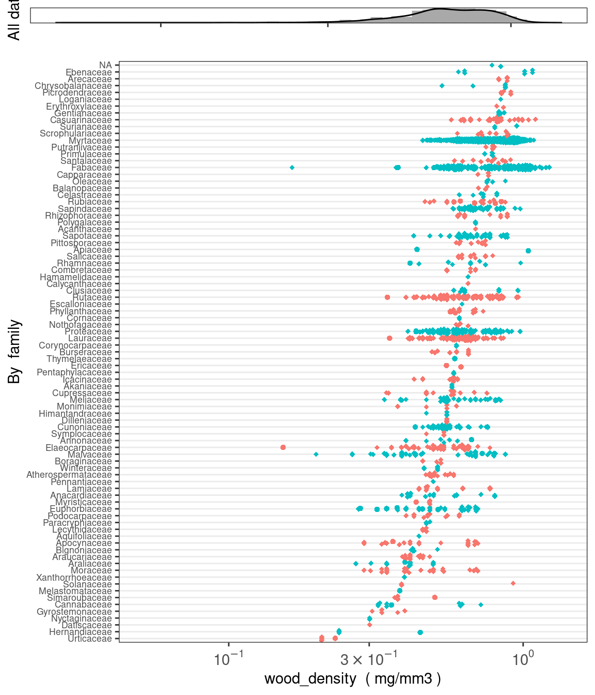
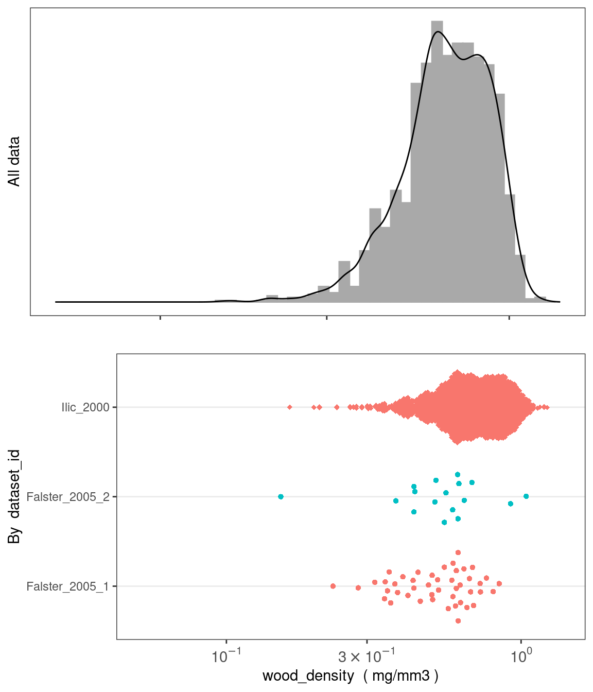

#install.packages("remotes")
remotes::install_github("traitecoevo/austraits", dependencies = TRUE, upgrade = "ask")
# Load the austraits package
library(austraits)27 The austraits package
The austraits package is designed to aid users in accessing data from AusTraits, a curated plant trait database for the Australian flora. This package contains several core functions to wrangle and visualise data. Below, we include a tutorial to illustrate how to use these functions in greater detail.
Note that we are using a reduced subset of v.3.0.2, so the number of records and taxa will not be match your values
27.1 Getting started
austraits is still under development. To install the current version from GitHub:
Loading AusTraits database
By default, load_austraits will download AusTraits to a specified path e.g. data/austraits and will reload it from this location in the future. You can set update = TRUE so the austrait versions are downloaded fresh from Zenodo. Note that load_austraits will happily accept a DOI of a particular version.
austraits <- load_austraits(version = "3.0.2", path = "data/austraits")You can check out different versions and their associated DOI of AusTraits by using:
get_versions(path = "data/austraits")The AusTraits object is a very long list with various of elements. If you are not familiar with working with lists in R, we recommend having a quick look at this tutorial. To learn more about the structure of austraits, check out the structure of the database.
austraits#> This is version 0.0.0.900 of austraits!
#>
#> This object contains a total of 13695 records for 1255 taxa and 65 traits.
#>
#> This object is a 'list' with the following components:
#>
#> - `traits`: A table containing measurements of plant traits.
#> - `sites`: A table containing observations of site characteristics associated with information in `traits`. Cross referencing between the two dataframes is possible using combinations of the variables `dataset_id`, `site_name`.
#> - `contexts`: A table containing observations of contextual characteristics associated with information in `traits`. Cross referencing between the two dataframes is possible using combinations of the variables `dataset_id`, `context_name`.
#> - `methods`: A table containing details on methods with which data were collected, including time frame and source.
#> - `excluded_data`: A table of data that did not pass quality test and so were excluded from the master dataset.
#> - `taxa`: A table containing details on taxa associated with information in `traits`. This information has been sourced from the APC (Australian Plant Census) and APNI (Australian Plant Names Index) and is released under a CC-BY3 license.
#> - `definitions`: A copy of the definitions for all tables and terms. Information included here was used to process data and generate any documentation for the study.
#> - `sources`: Bibtex entries for all primary and secondary sources in the compilation.
#> - `contributors`: A table of people contributing to each study.
#> - `taxonomic_updates`: A table of all taxonomic changes implemented in the construction of AusTraits. Changes are determined by comapring against the APC (Australian Plant Census) and APNI (Australian Plant Names Index).
#> - `build_info`: A description of the computing environment used to create this version of the dataset, including version number, git commit and R session_info.
#>
#> To access a component, try using the $ e.g. austraits$traits27.2 Descriptive summaries of traits and taxa
AusTraits contains 65 plant traits. Check out definitions of the traits to learn more about how each trait is defined.
Have a look at what trait or taxa we have with:
summarise_austraits(austraits, "trait_name") %>% head()#> trait_name n_records n_dataset n_taxa percent_total
#> bark_C_per_dry_mass 170 1 17 0.01240
#> bark_N_per_dry_mass 170 1 17 0.01240
#> bark_delta13C 170 1 17 0.01240
#> bark_delta15N 170 1 17 0.01240
#> bark_thickness 187 1 17 0.01370
#> branch_mass_fraction 45 1 45 0.00329summarise_austraits(austraits, var = "family") %>% head()#> family n_records n_dataset n_taxa percent_total
#> Acanthaceae 1 1 1 0.000073
#> Akaniaceae 3 1 1 0.000219
#> Anacardiaceae 462 3 7 0.033700
#> Annonaceae 15 2 5 0.001100
#> Apiaceae 17 1 2 0.001240
#> Apocynaceae 32 3 9 0.002340summarise_austraits(austraits, "genus") %>% head()#> genus n_records n_dataset n_taxa percent_total
#> Acacia 1642 5 79 0.120000
#> Aceratium 5 1 3 0.000365
#> Ackama 10 1 2 0.000730
#> Acradenia 3 1 2 0.000219
#> Acronychia 21 3 7 0.001530
#> Actinotus 10 1 1 0.000730Interested in a specific trait? Try lookup_trait
lookup_trait(austraits, "leaf") %>% head()#> [1] "leaf_angle" "leaf_area"
#> [3] "leaf_compoundness" "leaf_N_per_dry_mass"
#> [5] "specific_leaf_area" "leaf_cell_wall_fraction"27.3 Extracting data
In most cases, users would like to extract a subset of austraits for their own research purposes.extract_dataset subsets a particular study, whereas extract_traitsubsets by certain traits. Note that the other tables and elements of the AusTraits data are extracted too, not just the main trait table. See ?extract_dataset and ?extract_trait for more details
Extracting by study
Filtering one particular study and assigning it to an object
subset_data <- extract_dataset(austraits, "Falster_2005_2")
subset_data$traits %>% head()#> # A tibble: 6 × 12
#> dataset_id taxon_name site_name context_name observation_id trait_name value
#> <chr> <chr> <chr> <chr> <chr> <chr> <chr>
#> 1 Falster_200… Acacia lo… Myall_La… <NA> Falster_2005_… fire_resp… fire…
#> 2 Falster_200… Acacia lo… Myall_La… <NA> Falster_2005_… huber_val… 0.00…
#> 3 Falster_200… Acacia lo… Myall_La… <NA> Falster_2005_… huber_val… 0.00…
#> 4 Falster_200… Acacia lo… Myall_La… <NA> Falster_2005_… huber_val… 0.00…
#> 5 Falster_200… Acacia lo… Myall_La… <NA> Falster_2005_… huber_val… 0.00…
#> 6 Falster_200… Acacia lo… Myall_La… <NA> Falster_2005_… leaf_area 1761
#> # ℹ 5 more variables: unit <chr>, date <chr>, value_type <fct>,
#> # replicates <chr>, original_name <chr>Filtering multiple studies by two different lead authors and assigning it to an object
subset_multi_studies <- extract_dataset(austraits,
dataset_id = c("Thompson_2001","Ilic_2000"))
subset_multi_studies$traits %>% head()#> # A tibble: 6 × 12
#> dataset_id taxon_name site_name context_name observation_id trait_name value
#> <chr> <chr> <chr> <chr> <chr> <chr> <chr>
#> 1 Ilic_2000 Acacia acra… <NA> <NA> Ilic_2000_0001 wood_dens… 0.904
#> 2 Ilic_2000 Acacia acum… <NA> <NA> Ilic_2000_0002 wood_dens… 0.895
#> 3 Ilic_2000 Acacia acum… <NA> <NA> Ilic_2000_0003 wood_dens… 1.008
#> 4 Ilic_2000 Acacia adsu… <NA> <NA> Ilic_2000_0004 wood_dens… 0.887
#> 5 Ilic_2000 Acacia ampl… <NA> <NA> Ilic_2000_0005 wood_dens… 0.568
#> 6 Ilic_2000 Acacia aneu… <NA> <NA> Ilic_2000_0006 wood_dens… 1.035
#> # ℹ 5 more variables: unit <chr>, date <chr>, value_type <fct>,
#> # replicates <chr>, original_name <chr>Filtering multiple studies by same lead author (e.g. Falster) and assigning it to an object.
# First, we need to identify all studies with an id that includes "Falster"
( dataset_ids <- austraits$methods$dataset_id %>% unique() %>% subset(., grepl("Falster",.))) #> [1] "Falster_2003" "Falster_2005_1" "Falster_2005_2"# Then we extract
data_falster_studies <- extract_dataset(austraits, dataset_ids)
data_falster_studies$traits %>% head()#> # A tibble: 6 × 12
#> dataset_id taxon_name site_name context_name observation_id trait_name value
#> <chr> <chr> <chr> <chr> <chr> <chr> <chr>
#> 1 Falster_2003 Acacia my… Ku-ring-… <NA> Falster_2003_… leaf_angle 66.1
#> 2 Falster_2003 Acacia my… Ku-ring-… <NA> Falster_2003_… leaf_area 319
#> 3 Falster_2003 Acacia my… Ku-ring-… <NA> Falster_2003_… leaf_comp… simp…
#> 4 Falster_2003 Acacia su… Ku-ring-… <NA> Falster_2003_… leaf_angle 71.7
#> 5 Falster_2003 Acacia su… Ku-ring-… <NA> Falster_2003_… leaf_area 562
#> 6 Falster_2003 Acacia su… Ku-ring-… <NA> Falster_2003_… leaf_comp… simp…
#> # ℹ 5 more variables: unit <chr>, date <chr>, value_type <fct>,
#> # replicates <chr>, original_name <chr>Extracting by taxonomic level
# By family
proteaceae <- extract_taxa(austraits, family = "Proteaceae")
# Checking that only taxa in Proteaceae have been extracted
proteaceae$taxa$family %>% unique()#> [1] "Proteaceae"# By genus
acacia <- extract_taxa(austraits, genus = "Acacia")
# Checking that only taxa in Acacia have been extracted
acacia$traits$taxon_name %>% unique() %>% head()#> [1] "Acacia myrtifolia" "Acacia suaveolens" "Acacia floribunda"
#> [4] "Acacia celsa" "Acacia longifolia" "Acacia terminalis"Extracting by trait
Filtering one particular trait and assigning it to an object
data_wood_dens <- extract_trait(austraits, "wood_density")
head(data_wood_dens$traits)#> # A tibble: 6 × 12
#> dataset_id taxon_name site_name context_name observation_id trait_name value
#> <chr> <chr> <chr> <chr> <chr> <chr> <dbl>
#> 1 Falster_200… Acacia ce… Atherton <NA> Falster_2005_… wood_dens… 0.498
#> 2 Falster_200… Acronychi… Atherton <NA> Falster_2005_… wood_dens… 0.525
#> 3 Falster_200… Alphitoni… Atherton <NA> Falster_2005_… wood_dens… 0.413
#> 4 Falster_200… Glochidio… Atherton <NA> Falster_2005_… wood_dens… 0.566
#> 5 Falster_200… Homalanth… Atherton <NA> Falster_2005_… wood_dens… 0.319
#> 6 Falster_200… Melicope … Atherton <NA> Falster_2005_… wood_dens… 0.346
#> # ℹ 5 more variables: unit <chr>, date <chr>, value_type <fct>,
#> # replicates <chr>, original_name <chr>Combining lookup_trait with extract_trait to obtain all traits with ‘leaf’ in the trait name and assigning it to an object. Note we use the . notation to pass on the lookup_trait results to extract_trait
data_leaf <- lookup_trait(austraits, "leaf") %>% extract_trait(austraits, .)
head(data_leaf$traits)#> # A tibble: 6 × 12
#> dataset_id taxon_name site_name context_name observation_id trait_name value
#> <chr> <chr> <chr> <chr> <chr> <chr> <dbl>
#> 1 Falster_2003 Acacia my… Ku-ring-… <NA> Falster_2003_… leaf_angle 66.1
#> 2 Falster_2003 Acacia my… Ku-ring-… <NA> Falster_2003_… leaf_area 319
#> 3 Falster_2003 Acacia my… Ku-ring-… <NA> Falster_2003_… leaf_comp… NA
#> 4 Falster_2003 Acacia su… Ku-ring-… <NA> Falster_2003_… leaf_angle 71.7
#> 5 Falster_2003 Acacia su… Ku-ring-… <NA> Falster_2003_… leaf_area 562
#> 6 Falster_2003 Acacia su… Ku-ring-… <NA> Falster_2003_… leaf_comp… NA
#> # ℹ 5 more variables: unit <chr>, date <chr>, value_type <fct>,
#> # replicates <chr>, original_name <chr>27.4 Join data from other tables and elements
Once users have extracted the data they want, they may want to merge other study details into the main traits dataframe for their analyses. For example, users may require taxonomic information for a phylogenetic analysis. This is where the join_ functions come in. There are five join_ functions in total, each designed to append specific information from other tables and elements in the austraits object. Their suffixes refer to the type of information that is joined, e.g. join_taxonomy appends taxonomic information to the traits dataframe. See ?join_all for more details.
# Join taxonomic information
(data_leaf %>% join_taxonomy)$traits %>% head()#> # A tibble: 6 × 16
#> dataset_id taxon_name site_name context_name observation_id trait_name value
#> <chr> <chr> <chr> <chr> <chr> <chr> <dbl>
#> 1 Falster_2003 Acacia my… Ku-ring-… <NA> Falster_2003_… leaf_angle 66.1
#> 2 Falster_2003 Acacia my… Ku-ring-… <NA> Falster_2003_… leaf_area 319
#> 3 Falster_2003 Acacia my… Ku-ring-… <NA> Falster_2003_… leaf_comp… NA
#> 4 Falster_2003 Acacia su… Ku-ring-… <NA> Falster_2003_… leaf_angle 71.7
#> 5 Falster_2003 Acacia su… Ku-ring-… <NA> Falster_2003_… leaf_area 562
#> 6 Falster_2003 Acacia su… Ku-ring-… <NA> Falster_2003_… leaf_comp… NA
#> # ℹ 9 more variables: unit <chr>, date <chr>, value_type <fct>,
#> # replicates <chr>, original_name <chr>, family <chr>, genus <chr>,
#> # taxonRank <chr>, acceptedNameUsageID <chr># Join methodological information
(data_leaf %>% join_methods)$traits %>% head()#> # A tibble: 6 × 16
#> dataset_id taxon_name site_name context_name observation_id trait_name value
#> <chr> <chr> <chr> <chr> <chr> <chr> <dbl>
#> 1 Falster_2003 Acacia my… Ku-ring-… <NA> Falster_2003_… leaf_angle 66.1
#> 2 Falster_2003 Acacia my… Ku-ring-… <NA> Falster_2003_… leaf_area 319
#> 3 Falster_2003 Acacia my… Ku-ring-… <NA> Falster_2003_… leaf_comp… NA
#> 4 Falster_2003 Acacia su… Ku-ring-… <NA> Falster_2003_… leaf_angle 71.7
#> 5 Falster_2003 Acacia su… Ku-ring-… <NA> Falster_2003_… leaf_area 562
#> 6 Falster_2003 Acacia su… Ku-ring-… <NA> Falster_2003_… leaf_comp… NA
#> # ℹ 9 more variables: unit <chr>, date <chr>, value_type <fct>,
#> # replicates <chr>, original_name <chr>, methods <chr>,
#> # year_collected_start <chr>, year_collected_end <chr>, collection_type <chr># Join site based information
(data_leaf %>% join_sites)$traits %>% head()#> # A tibble: 6 × 14
#> dataset_id taxon_name site_name context_name observation_id trait_name value
#> <chr> <chr> <chr> <chr> <chr> <chr> <dbl>
#> 1 Falster_2003 Acacia my… Ku-ring-… <NA> Falster_2003_… leaf_angle 66.1
#> 2 Falster_2003 Acacia my… Ku-ring-… <NA> Falster_2003_… leaf_area 319
#> 3 Falster_2003 Acacia my… Ku-ring-… <NA> Falster_2003_… leaf_comp… NA
#> 4 Falster_2003 Acacia su… Ku-ring-… <NA> Falster_2003_… leaf_angle 71.7
#> 5 Falster_2003 Acacia su… Ku-ring-… <NA> Falster_2003_… leaf_area 562
#> 6 Falster_2003 Acacia su… Ku-ring-… <NA> Falster_2003_… leaf_comp… NA
#> # ℹ 7 more variables: unit <chr>, date <chr>, value_type <fct>,
#> # replicates <chr>, original_name <chr>, `latitude (deg)` <chr>,
#> # `longitude (deg)` <chr># Join context information
(data_leaf %>% join_contexts)$traits %>% head()#> # A tibble: 6 × 18
#> dataset_id taxon_name site_name context_name observation_id trait_name value
#> <chr> <chr> <chr> <chr> <chr> <chr> <dbl>
#> 1 Falster_2003 Acacia my… Ku-ring-… <NA> Falster_2003_… leaf_angle 66.1
#> 2 Falster_2003 Acacia my… Ku-ring-… <NA> Falster_2003_… leaf_area 319
#> 3 Falster_2003 Acacia my… Ku-ring-… <NA> Falster_2003_… leaf_comp… NA
#> 4 Falster_2003 Acacia su… Ku-ring-… <NA> Falster_2003_… leaf_angle 71.7
#> 5 Falster_2003 Acacia su… Ku-ring-… <NA> Falster_2003_… leaf_area 562
#> 6 Falster_2003 Acacia su… Ku-ring-… <NA> Falster_2003_… leaf_comp… NA
#> # ℹ 11 more variables: unit <chr>, date <chr>, value_type <fct>,
#> # replicates <chr>, original_name <chr>, type <chr>, description <chr>,
#> # leaf_parts <chr>, plant_age <chr>, `plant age` <chr>, season <chr># Alternatively users can join *all* information
(data_leaf %>% join_all)$traits %>% head()#> # A tibble: 6 × 22
#> dataset_id taxon_name site_name context_name observation_id trait_name value
#> <chr> <chr> <chr> <chr> <chr> <chr> <dbl>
#> 1 Falster_2003 Acacia my… Ku-ring-… <NA> Falster_2003_… leaf_angle 66.1
#> 2 Falster_2003 Acacia my… Ku-ring-… <NA> Falster_2003_… leaf_area 319
#> 3 Falster_2003 Acacia my… Ku-ring-… <NA> Falster_2003_… leaf_comp… NA
#> 4 Falster_2003 Acacia su… Ku-ring-… <NA> Falster_2003_… leaf_angle 71.7
#> 5 Falster_2003 Acacia su… Ku-ring-… <NA> Falster_2003_… leaf_area 562
#> 6 Falster_2003 Acacia su… Ku-ring-… <NA> Falster_2003_… leaf_comp… NA
#> # ℹ 15 more variables: unit <chr>, date <chr>, value_type <fct>,
#> # replicates <chr>, original_name <chr>, `latitude (deg)` <chr>,
#> # `longitude (deg)` <chr>, family <chr>, genus <chr>, taxonRank <chr>,
#> # acceptedNameUsageID <chr>, methods <chr>, year_collected_start <chr>,
#> # year_collected_end <chr>, collection_type <chr>27.5 Visualising data by site
plot_site_locations graphically summarises where trait data was collected from and how much data is available. The legend refers to the number of neighbouring points: the warmer the colour, the more data that is available. This function only works for studies that are geo-referenced. Users must first use join_sites to append latitude and longitude information into the trait dataframe before plotting
data_wood_dens <- data_wood_dens %>% join_sites()
plot_site_locations(data_wood_dens$traits)27.6 Visualising data distribution and variance
plot_trait_distribution creates histograms and beeswarm plots for specific traits to help users visualise the variance of the data. Users can specify whether to create separate beeswarm plots at the level of taxonomic family or for each dataset_id
austraits %>% plot_trait_distribution_beeswarm("wood_density", "family")
austraits %>% plot_trait_distribution_beeswarm("wood_density", "dataset_id")
27.7 Pivotting from long to wide format
The table of traits in AusTraits comes in long format, where data for all trait information are denoted by two columns called trait_name and value. You can convert this to wide format, where each trait is in a separate column, using the function trait_pivot_wider.
The function operates differently depending on the version of AusTraits
Pivot wider <=3.0.2
In AusTraits <=3.0.2, some studies will have multiple observations for some traits, e.g. huber values. This can prevent pivoting from long format to wide. There are two ways to collapse multiple observations. The first option bind_trait_values concatenates the observations into a single string, thereby retaining all information.
Alternatively, if you don’t want to bind the trait values, you can give summarise_trait_means a go, which computes means with multiple observations. Note that this method condenses the traits table and you won’t be able to revert it back unless you load_austraits again
bind_trait_values
data_wide_bound <- data_falster_studies$traits %>%
bind_trait_values() %>% # Joining multiple obs with `--`
trait_pivot_wider() #Pivot wide
data_wide_bound$value # The trait values table#> # A tibble: 103 × 17
#> dataset_id taxon_name site_name context_name observation_id leaf_angle
#> <chr> <chr> <chr> <chr> <chr> <chr>
#> 1 Falster_2003 Acacia myrtifo… Ku-ring-… <NA> Falster_2003_… 66.1
#> 2 Falster_2003 Acacia suaveol… Ku-ring-… <NA> Falster_2003_… 71.7
#> 3 Falster_2003 Angophora hisp… Ku-ring-… <NA> Falster_2003_… 50.8
#> 4 Falster_2003 Banksia margin… Ku-ring-… <NA> Falster_2003_… 53.1
#> 5 Falster_2003 Banksia oblong… Ku-ring-… <NA> Falster_2003_… 45
#> 6 Falster_2003 Boronia pinnata Ku-ring-… <NA> Falster_2003_… 43.9
#> 7 Falster_2003 Conospermum lo… Ku-ring-… <NA> Falster_2003_… 72.3
#> 8 Falster_2003 Epacris pulche… Ku-ring-… <NA> Falster_2003_… 42.9
#> 9 Falster_2003 Eriostemon aus… Ku-ring-… <NA> Falster_2003_… 62.1
#> 10 Falster_2003 Corymbia gummi… Ku-ring-… <NA> Falster_2003_… 59.3
#> # ℹ 93 more rows
#> # ℹ 11 more variables: leaf_area <chr>, leaf_compoundness <chr>,
#> # branch_mass_fraction <chr>, huber_value <chr>, leaf_N_per_dry_mass <chr>,
#> # seed_mass <chr>, specific_leaf_area <chr>, wood_density <chr>,
#> # fire_response <chr>, plant_height <chr>, original_name <chr># Check out the 'bounded' trait values
data_wide_bound$value %>%
select(-c(1:5)) %>% #Excluding values that are not traits so we can see which columns contains bounded values
filter_all(.vars_predicate = any_vars(str_detect(., "--"))) #> # A tibble: 55 × 12
#> leaf_angle leaf_area leaf_compoundness branch_mass_fraction huber_value
#> <chr> <chr> <chr> <chr> <chr>
#> 1 <NA> 2786 <NA> 0.67 0.00033590863285…
#> 2 <NA> 14302 <NA> 0.48 0.00013227513227…
#> 3 <NA> 6820 <NA> 0.42 0.00023041474654…
#> 4 <NA> 3209 <NA> 0.41 0.00050175614651…
#> 5 <NA> 10682 <NA> 0.47 0.00046816479400…
#> 6 <NA> 6955 <NA> 0.58 0.00023803856224…
#> 7 <NA> 5228 <NA> 0.58 0.00059311981020…
#> 8 <NA> 6806 <NA> 0.42 0.00016644474034…
#> 9 <NA> 11157 <NA> 0 0.00020092425155…
#> 10 <NA> 3401 <NA> 0.34 0.00023142791020…
#> # ℹ 45 more rows
#> # ℹ 7 more variables: leaf_N_per_dry_mass <chr>, seed_mass <chr>,
#> # specific_leaf_area <chr>, wood_density <chr>, fire_response <chr>,
#> # plant_height <chr>, original_name <chr>If you would like to revert the bounded trait values, you have to use trait_pivot_longer first, then call separate_trait_values:
data_wide_bound %>%
trait_pivot_longer() %>%
separate_trait_values(., austraits$definitions)#> # A tibble: 691 × 12
#> dataset_id taxon_name site_name context_name observation_id trait_name value
#> <chr> <chr> <chr> <chr> <chr> <chr> <chr>
#> 1 Falster_20… Acacia my… Ku-ring-… <NA> Falster_2003_… leaf_angle 66.1
#> 2 Falster_20… Acacia my… Ku-ring-… <NA> Falster_2003_… leaf_area 319
#> 3 Falster_20… Acacia my… Ku-ring-… <NA> Falster_2003_… leaf_comp… simp…
#> 4 Falster_20… Acacia su… Ku-ring-… <NA> Falster_2003_… leaf_angle 71.7
#> 5 Falster_20… Acacia su… Ku-ring-… <NA> Falster_2003_… leaf_area 562
#> 6 Falster_20… Acacia su… Ku-ring-… <NA> Falster_2003_… leaf_comp… simp…
#> 7 Falster_20… Angophora… Ku-ring-… <NA> Falster_2003_… leaf_angle 50.8
#> 8 Falster_20… Angophora… Ku-ring-… <NA> Falster_2003_… leaf_area 1590
#> 9 Falster_20… Angophora… Ku-ring-… <NA> Falster_2003_… leaf_comp… simp…
#> 10 Falster_20… Banksia m… Ku-ring-… <NA> Falster_2003_… leaf_angle 53.1
#> # ℹ 681 more rows
#> # ℹ 5 more variables: unit <chr>, date <chr>, value_type <fct>,
#> # replicates <chr>, original_name <chr>summarise_trait_means
data_wide_summarised <- data_falster_studies$traits %>%
summarise_trait_means() %>%
trait_pivot_wider()
data_wide_summarised$value %>% head()#> # A tibble: 6 × 17
#> dataset_id taxon_name site_name context_name observation_id leaf_angle
#> <chr> <chr> <chr> <chr> <chr> <dbl>
#> 1 Falster_2003 Acacia myrtifol… Ku-ring-… <NA> Falster_2003_… 66.1
#> 2 Falster_2003 Acacia suaveole… Ku-ring-… <NA> Falster_2003_… 71.7
#> 3 Falster_2003 Angophora hispi… Ku-ring-… <NA> Falster_2003_… 50.8
#> 4 Falster_2003 Banksia margina… Ku-ring-… <NA> Falster_2003_… 53.1
#> 5 Falster_2003 Banksia oblongi… Ku-ring-… <NA> Falster_2003_… 45
#> 6 Falster_2003 Boronia pinnata Ku-ring-… <NA> Falster_2003_… 43.9
#> # ℹ 11 more variables: leaf_area <dbl>, leaf_compoundness <dbl>,
#> # branch_mass_fraction <dbl>, leaf_N_per_dry_mass <dbl>, seed_mass <dbl>,
#> # specific_leaf_area <dbl>, wood_density <dbl>, huber_value <dbl>,
#> # fire_response <dbl>, plant_height <dbl>, original_name <chr>